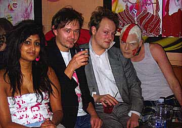

 Fascinerende udspil "munch of us" er det første udspil fra det nye uafhængige pladeselskab Elektrikal Records, der er etableret af 2 anerkendte musikere og deres manager. Pladen byder på et bredt udvalg af house, ambient og electro og indeholder mange kontraster. "munch of us" er en af de bedre kompilations der er kommet på det danske marked for nyligt. Selve måden pladen er bygget op, minder meget om en pragtfuld sommeraften/nat i byen efterfulgt af morgen-sol over søerne søndag morgen. Pladen tager afsæt i Hårdt pumpende beats og pågående lyrik for så at bløde lidt op med mere poppede lovesongs i midten. I slutningen finder mand ambientnumre som "Moonfluffers" og "Mindtrap" der tager en med ind i et svævende melankolsk drømmeunivers. Medvirkende: Agent Mr. Cool og Little prince har tidligere været involveret i projekter som Aqua, Outlandich, Infernal, Banjos Likørstue, Danser med drenge mf. Pladedebuterende Johnny Warehouse og Hairwerk har i årevis været kendt i det homoseksuelle miljø og laver shows, bla. i forbindelse med dunst (forening for homoseksuelle/ Biseksuelle/ Transvestitter etc.) Kick occur, består af tre fyre fra henholdsvis USA, Norge og Danmark der siden år 2000 har produceret og spillet eksperimenterende elektronisk musik. |
||
|
Print denne side |